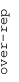
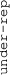

These results are also available as PDF and EPS documents.
Depending on your display resolution, scrolling or zooming may be necessary.
|  |
| 3 |
| 0 |
| -3 |
|  |
| GO_MRNA_TRANSPORT GO_MRNA_TRANSPORT | |||||||||||
| GO_RNA_EXPORT_FROM_NUCLEUS GO_RNA_EXPORT_FROM_NUCLEUS | |||||||||||
| GO_NEGATIVE_REGULATION_OF_VIRAL_LIFE_CYCLE GO_NEGATIVE_REGULATION_OF_VIRAL_LIFE_CYCLE | |||||||||||
| GO_NEGATIVE_REGULATION_OF_VIRAL_PROCESS GO_NEGATIVE_REGULATION_OF_VIRAL_PROCESS | |||||||||||
| GO_PHOSPHATIDYLINOSITOL_PHOSPHATE_PHOSPHATASE_ACTIVITY GO_PHOSPHATIDYLINOSITOL_PHOSPHATE_PHOSPHATASE_ACTIVITY | |||||||||||
| GO_PHOSPHATIDYLINOSITOL_BISPHOSPHATE_PHOSPHATASE_ACTIVITY GO_PHOSPHATIDYLINOSITOL_BISPHOSPHATE_PHOSPHATASE_ACTIVITY | |||||||||||
| GO_TRANSLATIONAL_INITIATION GO_TRANSLATIONAL_INITIATION | |||||||||||
| GO_RIBONUCLEOPROTEIN_COMPLEX_SUBUNIT_ORGANIZATION GO_RIBONUCLEOPROTEIN_COMPLEX_SUBUNIT_ORGANIZATION | |||||||||||
| GO_SPINDLE_ASSEMBLY GO_SPINDLE_ASSEMBLY | |||||||||||
| GO_MITOTIC_SPINDLE_POLE GO_MITOTIC_SPINDLE_POLE | |||||||||||
| GO_STRUCTURAL_CONSTITUENT_OF_RIBOSOME GO_STRUCTURAL_CONSTITUENT_OF_RIBOSOME | |||||||||||
| GO_COTRANSLATIONAL_PROTEIN_TARGETING_TO_MEMBRANE GO_COTRANSLATIONAL_PROTEIN_TARGETING_TO_MEMBRANE | |||||||||||
| GO_ESTABLISHMENT_OF_PROTEIN_LOCALIZATION_TO_ENDOPLASMIC_RETICULUM GO_ESTABLISHMENT_OF_PROTEIN_LOCALIZATION_TO_ENDOPLASMIC_RETICULUM | |||||||||||
| GO_PROTEIN_LOCALIZATION_TO_ENDOPLASMIC_RETICULUM GO_PROTEIN_LOCALIZATION_TO_ENDOPLASMIC_RETICULUM | |||||||||||
| GO_VIRAL_GENE_EXPRESSION GO_VIRAL_GENE_EXPRESSION | |||||||||||
| GO_MIDBODY GO_MIDBODY | |||||||||||
| GO_PROTEIN_TARGETING_TO_MEMBRANE GO_PROTEIN_TARGETING_TO_MEMBRANE | |||||||||||
| GO_CYTOSOLIC_RIBOSOME GO_CYTOSOLIC_RIBOSOME | |||||||||||
| GO_RIBOSOMAL_SUBUNIT GO_RIBOSOMAL_SUBUNIT | |||||||||||
| GO_CYTOSOLIC_LARGE_RIBOSOMAL_SUBUNIT GO_CYTOSOLIC_LARGE_RIBOSOMAL_SUBUNIT | |||||||||||
| GO_LARGE_RIBOSOMAL_SUBUNIT GO_LARGE_RIBOSOMAL_SUBUNIT | |||||||||||
| GO_GOLGI_CIS_CISTERNA GO_GOLGI_CIS_CISTERNA | |||||||||||
| GO_ESTABLISHMENT_OF_RNA_LOCALIZATION GO_ESTABLISHMENT_OF_RNA_LOCALIZATION | |||||||||||
| GO_MRNA_EXPORT_FROM_NUCLEUS GO_MRNA_EXPORT_FROM_NUCLEUS | |||||||||||
| GO_NUCLEAR_EXPORT GO_NUCLEAR_EXPORT | |||||||||||
| GO_CARBOHYDRATE_CATABOLIC_PROCESS GO_CARBOHYDRATE_CATABOLIC_PROCESS | |||||||||||
| GO_REGULATION_OF_EXTRINSIC_APOPTOTIC_SIGNALING_PATHWAY_IN_ABSENCE_OF_LIGAND GO_REGULATION_OF_EXTRINSIC_APOPTOTIC_SIGNALING_PATHWAY_IN_ABSENCE_OF_LIGAND | |||||||||||
| GO_FACE_DEVELOPMENT GO_FACE_DEVELOPMENT |